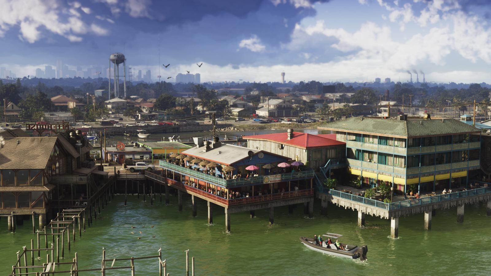
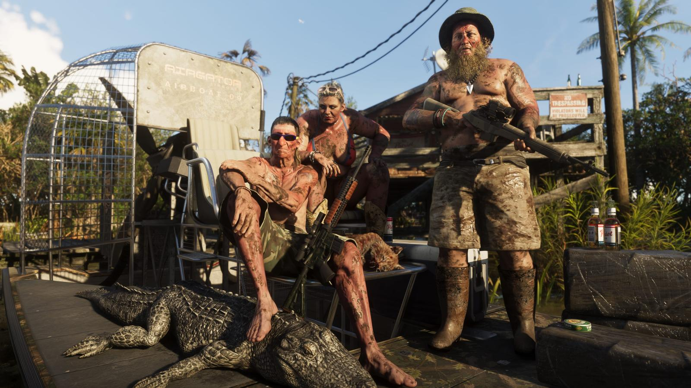
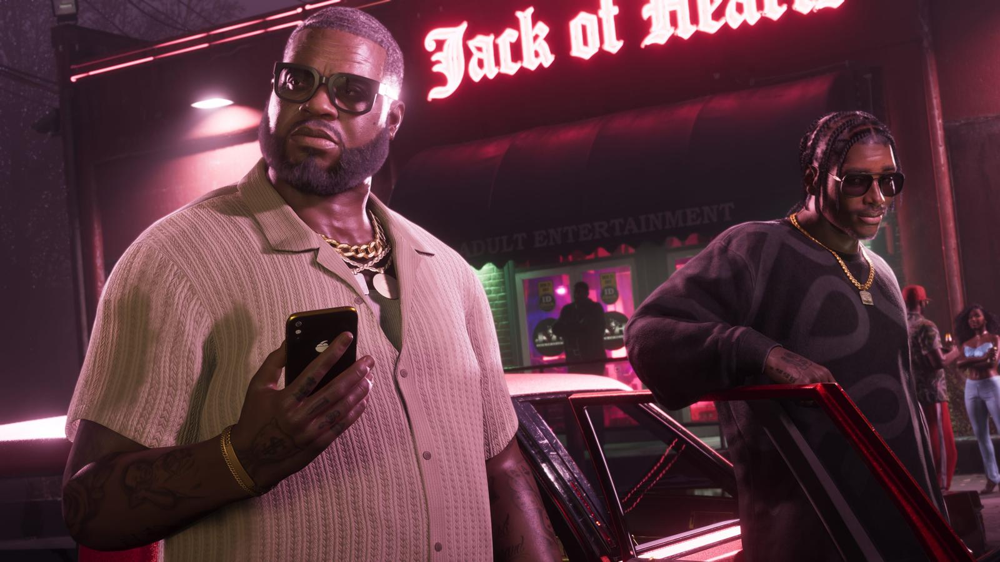

Сводка дня: 26 сентября 2026
Обновлено:

- До релиза — 54 дня, до предзагрузки — 47.
- GTA 6 — на обложке Game Informer №382: 14 страниц и 12 новых скриншотов выйдут 29 сентября.
- Rockstar продаёт набор «The Goodtime State» за $399,99 — и игры в нём нет.
- Перекупщики уже просят за него $800–1500, хотя набор ещё есть в продаже.
- На Golden Joystick Awards 2026 GTA 6 не попадёт — не проходит по датам.
Главное за два дня
8 ноября 2012 года журнал Game Informer показал обложку своего декабрьского номера — и мир впервые узнал, что в GTA V будет не один герой, а сразу три: Майкл, Франклин и Тревор. Прошло почти четырнадцать лет. 25 сентября 2026 года тот же журнал показал обложку №382. На ней — Джейсон и Лусия.
За последние двое суток вокруг GTA 6 случилось больше, чем за обычную неделю: обложка, которую фанаты ждали годами, коллекционный набор, который интернет разнёс в комментариях, и баскетболист, который всерьёз предупредил, что в ноябре профессиональный спорт «просядет». Разбираем по порядку.
Game Informer: круг замкнулся
Что случилось: GTA VI — главная тема номера №382. Автор — старший редактор Маркус Стюарт. В материале 14 страниц, эксклюзивные интервью с Rockstar и 12 новых скриншотов. Цифровая версия выходит 29 сентября, печатная доберётся до подписчиков и киосков в ближайшие недели. На обложке — оригинальный арт: Джейсон и Лусия в машине, с оружием в руках.
О чём будет текст, журнал уже сказал: продвинутая система погоды, которая имитирует капризы Флориды, животные на суше, в воздухе и под водой, и то, как Rockstar изучала Майами и штат, чтобы сделать «самый культурно и визуально точный мир» в своей истории. Анонс заканчивается фразой: «Если хотите понять, насколько „флоридской“ задумана GTA VI, — не пропустите этот материал».
Этой обложки могло не быть вовсе. 2 августа 2024 года GameStop закрыл Game Informer после 33 лет работы: сайт заменили прощальной страницей, редакцию уволили. В марте 2025-го журнал купила компания Gunzilla Games и вернула прежнюю команду, а в июне 2025-го снова пошла печать. Так что обложка с GTA 6 — это ещё и камбэк самого журнала. А весной фанаты уже один раз обманулись: приняли анонс обложки за GTA 6, а там оказалась The Blood of Dawnwalker.
Что это значит для игрока: 29 сентября — первые за месяц новые официальные кадры. Погода в теме номера не случайна: Флорида — «столица молний» США, летом там почти каждый день после обеда налетает гроза и через полчаса снова светит солнце. Если Rockstar это повторила, небо в Леониде будет жить своей жизнью. Кадры из номера разберём в рубрике «Разбор кадра».

Аллигатор за $400
Что случилось: 24 сентября Rockstar открыла предзаказ набора «Grand Theft Auto VI: The Goodtime State — Vice City Collection». Цена — $399,99 (в Великобритании £349,99). Доставка — 19 ноября, в день релиза. Регионы — Великобритания, Европа, Австралия, США и Канада. Самое важное мелким шрифтом: игры в наборе нет.
Внутри — сувениры так, будто ты съездил в Леониду в отпуск:
- шестидюймовая фигурка аллигатора Макки (Macca the Gator) с тайником в подставке;
- солнцезащитные очки Oakley Frogskins — матово-чёрные, с линзами Prizm Sapphire;
- кепка New Era 9FORTY с вышивкой Vice City;
- магнитное зеркальце с Маккой, коктейльная ложечка Vice City и брелок-лезвие;
- сумка через плечо Leonida Keys, стопка с ламантином Чанки (Chunkee the Manatee);
- набор из девяти значков в жестяной коробке, девять наклеек и двусторонний постер с картой Леониды.
Для сравнения: коллекционный набор Red Dead Redemption 2 тоже шёл без игры, но стоил $99,99 — вчетверо дешевле. А коллекционное издание GTA V в 2013 году стоило $149,99, и игра там была.
Интересно, как набор всплыл. Ещё до анонса дата-майнеры на форуме GTAForums нашли его в списке товаров платёжного сервиса Xsolla, через который работает магазин Rockstar. Через несколько часов утечка стала официальной — подробности в Слух: у GTA 6 будет коллекционное издание.
А перекупщики не стали ждать даже дефицита: на eBay набор уже выставляют за $800–1500, хотя на сайте Rockstar он пока свободно продаётся.
Что это значит для игрока: если хочется игру — берите игру; набор — чисто для коллекции. России в списке регионов доставки нет. Как игроки приняли цену — в материале Коллекционка GTA 6 за $400 без игры: что говорят игроки.
Музыка, которая слышит игрока
Что случилось: в посте о саундтреке Rockstar мимоходом бросила две фразы, из-за которых фанаты перечитывают его до сих пор: в игре будет «динамическая музыка» (dynamic score) и «следующая эволюция внутриигрового радио». Подробностей студия не дала — пообещала рассказать позже.
Динамическая музыка — это саундтрек, который меняется от того, что происходит на экране: тихо, пока ты крадёшься, громче, когда начинается перестрелка. В GTA V такой приём уже был в миссиях, а в Red Dead Redemption 2 музыка подстраивалась под погоню и бой. Что Rockstar называет «эволюцией радио», пока не знает никто. Фанаты гадают, дадут ли слушать музыку не только в машине.
У Rockstar в сентябре сложился ритм: новости выходят по четвергам. 27 августа — расширенный обзор игры, 3 сентября — лимитированные геймпады DualSense, 10 сентября — их предзаказ, 17 сентября — альбом саундтрека, 24 сентября — коллекционный набор. Следующий четверг — 1 октября. Это наша догадка, а не анонс, но проверить стоит.
NBA боится ноября
Что случилось: 22 сентября на медиадне «Хьюстон Рокетс» центровой Стивен Адамс выдал прогноз, который разлетелся по спортивным и игровым сайтам:
«Готовьтесь к ноябрю. Посмотрите на NFL, на все лиги — и смотрите, как они проседают».
Стивен Адамс, центровой «Хьюстон Рокетс»
Адамс уверен, что «пострадают» и тренеры, и скауты, но к декабрю все пройдут игру и форма вернётся.
Что это значит для игрока: ничего — кроме того, что масштаб ожидания вышел далеко за пределы игровой аудитории. Когда про релиз шутят на медиадне NBA, это уже поп-культура.

Награды: не везде успевает
Что случилось: GTA 6 не сможет участвовать в Golden Joystick Awards 2026: релиз 19 ноября не попадает в окно этого сезона. Первый шанс — только в следующем.
С The Game Awards сложнее. Церемония пройдёт 10 декабря 2026 в театре Peacock в Лос-Анджелесе. Крайний срок выхода игры обычно — третья пятница ноября, то есть примерно 20-е. Формально GTA 6 успевает на один день. Но есть подвох — о нём в разборе Миф: GTA 6 соберёт все награды «Игра года» в 2026.
Что ждём дальше
- 29 сентября — номер Game Informer с 12 новыми скриншотами и интервью Rockstar.
- 1 октября — очередной «четверг Rockstar» (наша догадка).
- 12 ноября — предзагрузка. Чек-лист: готов ли ты к релизу GTA 6
- 19 ноября — релиз. Точный отсчёт — Отсчёт до GTA 6 в вашем часовом поясе.
Пока ждём — проверьте себя: сможете узнать регион Леониды по одному кадру?
Источники: Game Informer (анонс обложки №382); Push Square; Rockstar Games Store; Wccftech; GamesRadar+; Insider Gaming; Destructoid; GamingBolt; Dexerto; Readdork; GameSpot; OpenCritic; Wikipedia — Game Informer.